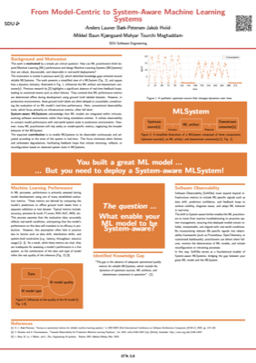
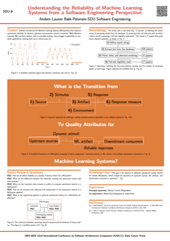

For an up-to-date list please see Google Scholar, or Find Researcher at SDU. At the date of writing, these are the current publication list:
Data, code, and supplementary material to reproduce the results of the publications above.
Planed, In Production or Disseminated Posters

ddsa-2025.pdf
icsa-2025.pdf